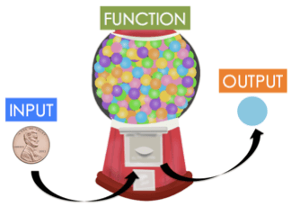

Capítulo 6 Funciones básicas de R
En este capítulo se presentará lo que es una función y se mostrarán varias funciones básicas que son útiles para realizar diversas tareas.
6.1 ¿Qué es una función de R?
En la figura de abajo se muestra una ilustración de lo que es una función o máquina general. Hay unas entradas (inputs) que luego son procesadas dentro de la caja para generar unas salidas (outputs). Un ejemplo de una función o máquina muy común en nuestras casas es la licuadora. Si a una licuadora le ingresamos leche, fresas, azúcar y hielo, el resultado será un delicioso jugo de fresa.

Las funciones en R se caracterizan por un nombre corto y que dé una idea de lo que hace la función. Los elementos que pueden ingresar (inputs) a la función se llaman parámetros o argumentos y se ubican dentro de paréntesis, el cuerpo de la función se ubica dentro de llaves y es ahí donde se procesan los inputs para convertirlos en outputs, a continuación se muestra la estructura general de una función.
nombre_de_funcion(parametro1, parametro2, ...) {
tareas internas
tareas internas
tareas internas
salida
}Cuando usamos una función sólo debemos escribir bien el nombre e ingresar correctamente los parámetros de la función, el cuerpo de la función ni lo vemos ni lo debemos modificar. A continuación se presenta un ejemplo de cómo usar la función mean para calcular un promedio.
notas <- c(4.0, 1.3, 3.8, 2.0) # Notas de un estudiante
mean(notas)## [1] 2.7756.2 Operadores de asignación
En R se pueden hacer asignación de varias formas, a continuación se presentan los operadores disponibles para tal fin.
<-este es el operador de asignación a izquierda, es el más usado y recomendado.->este es el operador de asignación a derecha, no es frecuente su uso.=el símbolo igual sirve para hacer asignaciones pero NO se recomienda usarlo.<<-este es un operador de asignación global y sólo debe ser usado por usuarios avanzados.
Ejemplo
Almacene los valores 5.3, 4.6 y 25 en los objetos a, b y age respectivamente, use diferentes símbolos de asignación.
Para hacer lo solicitado se podría usar el siguiente código.
a <- 5.3 # Recomended
4.6 -> b # It is not usual
age = 25 # Not recomended<-.
6.3 Operaciones básicas
En R se pueden hacer diversas operaciones usando operadores binarios. Este tipo de operadores se denomina binarios porque actuan entre dos objetos, a continuación el listado.
+operador binario para sumar.-operador binario para restar.*operador binario para multiplicar./operador binario para dividir.^operador binario para potencia.%/%operador binario para obtener el cociente en una división (número entero).%%operador binario para obtener el residuo en una división.
A continuación se presentan ejemplos de cómo usar las anteriores funciones.
6 + 4 # Para sumar dos números## [1] 10a <- c(1, 3, 2)
b <- c(2, 0, 1) # a y b de la misma dimensión
a + b # Para sumar los vectores a y b miembro a miembro## [1] 3 3 3a - b # Para restar dos vectores a y b miembro a miembro## [1] -1 3 1a * b # Para multiplicar## [1] 2 0 2a / b # Para dividir## [1] 0.5 Inf 2.0a ^ b # Para potencia## [1] 1 1 27 %/% 3 # Para saber las veces que cabe 3 en 7## [1] 27 %% 3 # Para saber el residuo al dividir 7 entre 3## [1] 16.4 Pruebas lógicas
En R se puede verificar si un objeto cumple una condición dada, a continuación el listado de las pruebas usuales.
<para saber si un número es menor que otro.>para saber si un número es mayor que otro.==para saber si un número es igual que otro.<=para saber si un número es menor o igual que otro.>=para saber si un número es mayor o igual que otro.
A continuación se presentan ejemplos de cómo usar las anteriores funciones.
5 < 12 # ¿Será 5 menor que 12?## [1] TRUE# Comparando objetos
x <- 5
y <- 20 / 4
x == y # ¿Será x igual a y?## [1] TRUE# Usando vectores
a <- c(1, 3, 2)
b <- c(2, 0, 1)
a > b # Comparación término a término## [1] FALSE TRUE TRUEa == b # Comparación de igualdad término a término## [1] FALSE FALSE FALSE6.5 Operadores lógicos
En R están disponibles los operadores lógicos negación, conjunción y disyunción. A continuación el listado de los operadores entre los elementos x e y.
!x # Negación de x
x & y # Conjunción entre x e y
x && y
x | y # Disyunción entre x e y
x || y
xor(x, y)A continuación se presentan ejemplos de cómo usar el símbolo de negación !.
ans <- c(TRUE, FALSE, TRUE)
!ans # Negando las respuestas almacenadas en ans## [1] FALSE TRUE FALSEx <- c(5, 1.5, 2, 3, 2)
!(x < 2.5) # Negando los resultados de una prueba## [1] TRUE FALSE FALSE TRUE FALSEA continuación se presentan ejemplos de cómo aplicar la conjunción & y &&.
x <- c(5, 1.5, 2) # Se construyen dos vectores para la prueba
y <- c(4, 6, 3)
x < 4 # ¿Serán los elementos de x menores que 4?## [1] FALSE TRUE TRUEy > 5 # ¿Serán los elementos de y mayores que 5?## [1] FALSE TRUE FALSEx < 4 & y > 5 # Conjunción entre las pruebas anteriores.## [1] FALSE TRUE FALSEx < 4 && y > 5 # Conjunción vectorial## [1] FALSENote las diferencias entre los dos últimos ejemplos, cuando se usa & se hace una prueba término a término y el resultado es un vector, cuando se usa && se aplica la conjunción al vector de resultados obtenido con &.
6.6 Funciones sobre vectores
En R podemos destacar las siguientes funciones básicas sobre vectores numéricos.
min: para obtener el mínimo de un vector.max: para obtener el máximo de un vector.length: para determinar la longitud de un vector.range: para obtener el rango de valores de un vector, entrega el mínimo y máximo.sum: entrega la suma de todos los elementos del vector.prod: multiplica todos los elementos del vector.which.min: nos entrega la posición en donde está el valor mínimo del vector.which.max: nos da la posición del valor máximo del vector.rev: invierte un vector.
Ejemplo
Construir en vector llamado myvec con los siguientes elementos: 5, 3, 2, 1, 2, 0, NA, 0, 9, 6. Luego aplicar todas las funciones anteriores para verificar el funcionamiento de las mismas.
myvec <- c(5, 3, 2, 1, 2, 0, NA, 0, 9, 6)
myvec## [1] 5 3 2 1 2 0 NA 0 9 6min(myvec) # Opss, no aparece el mínimo que es Cero.## [1] NAmin(myvec, na.rm=TRUE) # Usamos na.rm = TRUE para remover el NA## [1] 0max(myvec, na.rm=T) # Para obtener el valor máximo## [1] 9range(myvec, na.rm=T) # Genera min y max simultáneamente## [1] 0 9sum(myvec, na.rm=T) # La suma de los valores internos## [1] 28prod(myvec, na.rm=T) # El productor de los valores internos## [1] 0which.min(myvec) # Posición del valor mínimo 0 en el vector## [1] 6which.max(myvec) # Posición del valor máximo 9 en el vector## [1] 9De las dos últimas líneas podemos destacar lo siguiente:
- NO es necesario usar
na.rm = TRUEpara remover elNAdentro de las funcioneswhich.minniwhich.max. - El valor mínimo 0 aparece en las posicione
6.7 Función rep
En R podemos crear repeticiones usando la función rep, la estructura de esta función es:
rep(x, times=1, length.out=NA, each=1)Los argumentos de esta función son:
x: vector con los elementos a repetir.times: número de veces que el vectorxse debe repetir.length.out: longitud deseada para el vector resultante.each: número de veces que cada elemento dexse debe repetir.
Ejemplo
Construya las siguientes repeticiones usando la función rep, no lo haga ingresando número por número.
- 1 2 3 4 1 2 3 4
- 1 1 2 2 3 3 4 4
- 1 1 2 3 3 4
- 1 1 2 2 3 3 4 4
La clave para construir una repetición es descrubir la semilla o elemento que se repite. Las instrucciones para obtener las repeticiones anteriores se muestra a continuación.
rep(x=1:4, times=2)## [1] 1 2 3 4 1 2 3 4rep(x=1:4, times=c(2,2,2,2))## [1] 1 1 2 2 3 3 4 4rep(x=1:4, times=c(2,1,2,1))## [1] 1 1 2 3 3 4rep(x=1:4, each=2)## [1] 1 1 2 2 3 3 4 46.8 Función seq
En R podemos crear secuencias de números de una forma sencilla usando la función seq, la estructura de esta función es:
seq(from=1, to=1, by, length.out)Los argumentos de esta función son:
from: valor de inicio de la secuencia.to: valor de fin de la secuencia, no siempre se alcanza.by: incremento de la secuencia.length.out: longitud deseado de la secuencia.
Ejemplo
Construya las siguientes tres secuencias usando la función seq.
- Once valores igualmente espaciados desde 0 hasta 1.
- Una secuencia de dos en dos comenzando en 1.
- Una secuencia desde 1 con un salto de \(\pi\) y sin pasar del número 9.
El código necesario para obtener las secuencias se muestra a continuación.
seq(from=0, to=1, length.out = 11)## [1] 0.0 0.1 0.2 0.3 0.4 0.5 0.6 0.7 0.8 0.9 1.0seq(from=1, to=9, by=2) # matches 'end'## [1] 1 3 5 7 9seq(from=1, to=9, by=pi) # stays below 'end'## [1] 1.000000 4.141593 7.283185: que sirve para construir secuencias de uno en uno fácilmente.
Revise los siguientes ejemplos para entender el funcionamiento del operador :.
2:8## [1] 2 3 4 5 6 7 83:-5## [1] 3 2 1 0 -1 -2 -3 -4 -5pi:6 # real sequence## [1] 3.141593 4.141593 5.1415936:pi # integer sequence## [1] 6 5 46.9 EJERCICIOS
Use funciones o procedimientos (varias líneas) de R para responder cada una de las siguientes preguntas.
¿Qué cantidad de dinero sobra al repartir 10000$ entre 3 personas?
¿Es el número 4560 divisible por 3?
Construya un vector con los números enteros del 2 al 87. ¿Cuáles de esos números son divisibles por 7?
Construya dos vectores, el primero con los números enteros desde 7 hasta 3, el segundo vector con los primeros cinco números positivos divisibles por 5. Sea A la condición de ser par en el primer vector. Sea B la condición de ser mayor que 10 en el segundo vector. ¿En cuál de las 5 posiciones se cumple A y B simultáneamente?
Construya un vector con los siguientes elementos: 1, -4, 5, 9, -4. Escriba un procedimiento para extraer las posiciones donde está el valor mínimo en el vector.
Calcular \(8!\)
Evaluar la siguiente suma \(\sum_{i=3}^{i=7}e^i\)
Evaluar la siguiente productoria \(\prod_{i=1}^{i=10}\log\sqrt{i}\)
Construya un vector cualquiera e inviertalo, es decir, que el primer elemento quede de último, el segundo de penúltimo y así sucesivamente. Compare su resultado con el de la función
rev.Crear el vector: \(1, 2, 3, \ldots, 19, 20\).
Crear el vector: \(20, 19, \ldots , 2, 1\).
Crear el vector: \(1, -2, 3, -4, 5, -6, \ldots, 19, -20\).
Crear el vector: \(0.1^3, 0.2^1, 0.1^6, 0.2^4, . . . , 0.1^{36}, 0.2^{34}\).
Calcular lo siguiente: \(\sum_{i=10}^{100}(i^3+4i^2)\) and \(\sum_{i=1}^{25}\left( \frac{2^i}{i} + \frac{3^i}{i^2} \right)\).
En R hay unas bases de datos incluídas, una de ellas es la base de datos llamada mtcars. Para conocer las variables que están en mtcars usted puede escribir en la consola ?mtcars o también help(mtcars). De la base mtcars obtenga bases de datos que cumplan las siguientes condiciones.
- Autos que tengan un rendimiento menor a 18 millas por galón de combustible.
- Autos que tengan 4 cilindros.
- Autos que pesen más de 2500 libras y tengan transmisión manual.